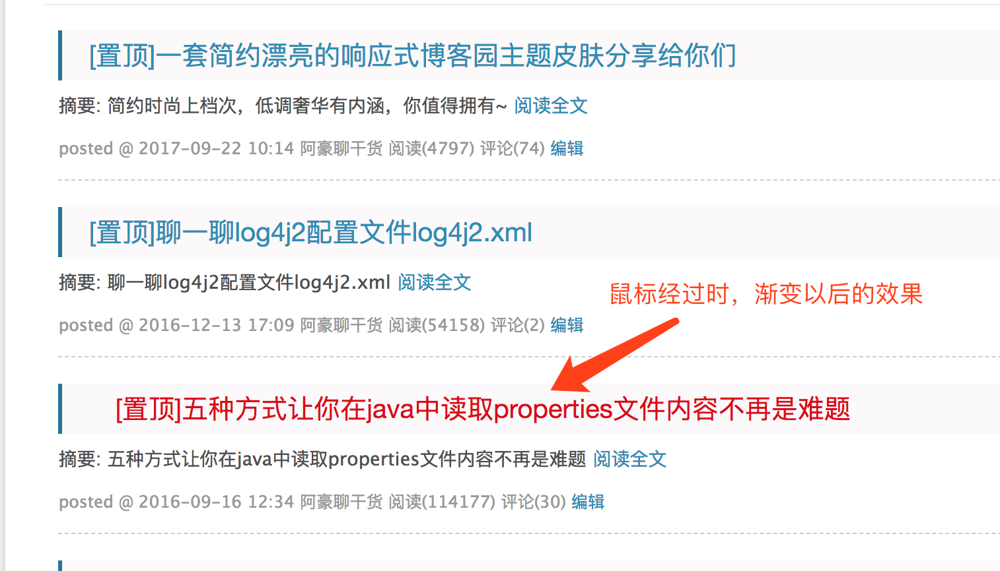
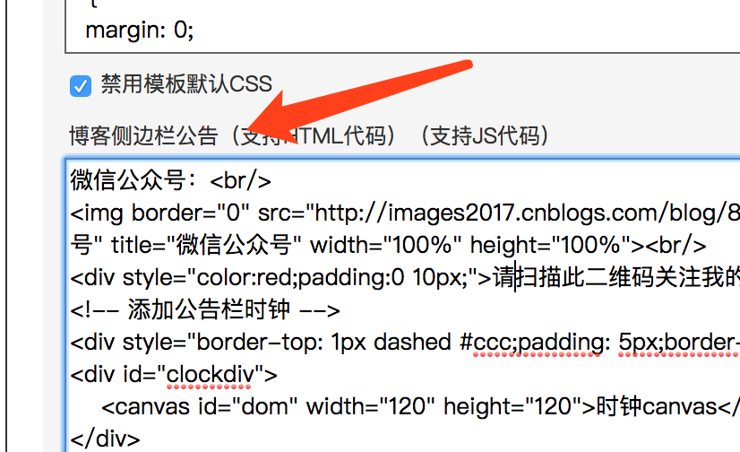
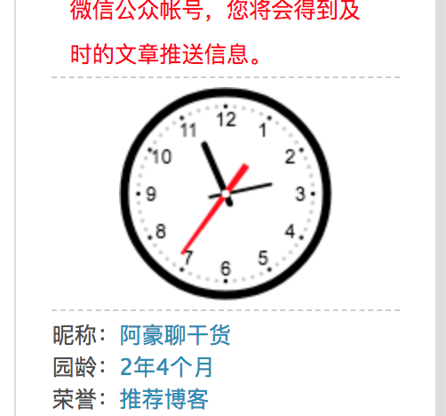
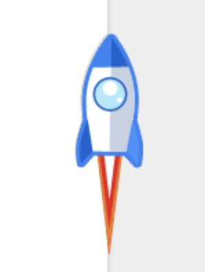
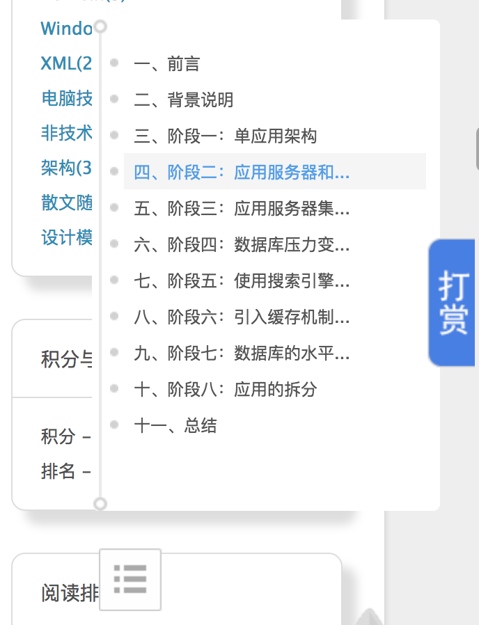
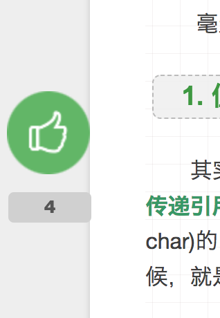

原文连接:https://www.cnblogs.com/coding-farmer/p/11940805.html
一、背景
前段时间，写的一篇关于博客园主题皮肤分享的文章，一经发出便受到了极大的热捧，后来很多网友留言说，想要让我分享现在的模板，毕竟现在这个模板已经比之前分享的那个多经历了N多个版本的改进和优化。那本文我就来分享我博客园中的所有的特性，以供大家直接开箱即用。废话不多说，直接开搞~
二、最新版CSS代码
需要copy下面的最新版CSS代码到页面定制CSS代码区中


@font-face {
font-family: 'FontAwesome';
font-style: normal;
font-weight: normal;
src: url("http://blog.zhaishidan.cn/css/font/fontawesome-webfont.eot?#iefix") format('embedded-opentype'), url("http://blog.zhaishidan.cn/css/font/fontawesome-webfont.woff") format('woff'), url("http://blog.zhaishidan.cn/css/font/fontawesome-webfont.ttf") format('truetype'), url("http://blog.zhaishidan.cn/css/font/fontawesome-webfont.svg#FontAwesomeRegular") format('svg');
}
* {
margin: 0;
padding: 0;
}
body {
background: #eee;
color: #444;
font-family: "Lucida Grande", "Lucida Sans Unicode", Helvetica, Arial, Verdana, sans-serif;
font-size: 14px;
text-shadow: 0 0 1px transparent;
color:#505050;
}
@media screen and (max-width: 1260px) {
body {
margin: 0px;
}
}
@media screen and (max-width: 600px) {
body {
font-size: 13px;
}
}
h1,h2,h3,h4,h5,h6 {
font-family: "Lucida Grande", "Lucida Sans Unicode", Helvetica, Arial, Verdana, sans-serif;
}
h1 {
font-size: 1.8em;
}
h2 {
font-size: 1.5em;
}
h3 {
font-size: 1.3em;
}
a {
text-decoration: none;
color: #258fb8;
}
a:hover {
text-decoration: underline;
}
#home{
margin: 0 auto;
width: 85%;
background-color: #fff;
padding: 30px;
margin-top: 50px;
margin-bottom: 50px;
box-shadow: 0 2px 6px rgba(100, 100, 100, 0.3);
border-radius: 20px;
}
#tbCommentBody {width: 100%;}
#blogTitle {width:23%;margin-top: -10px;text-align: center;}
.alignright {float: right;}
#header, #main, #footer {width: 100%;margin: 0 auto;}
@media screen and (max-width: 1260px) {
#main {
width: 95%;
}
}
#mainContent {
width: 75%;
float: left;
margin-left: 10px;
}
@media screen and (max-width: 1260px) {
#main-col {
width: 100%;
margin-right: -300px;
}
}
@media screen and (max-width: 900px) {
#main-col {
margin-right: 0;
float: none;
}
}
@media screen and (max-width: 1260px) {
#wrapper {
margin-right: 300px;
}
}
@media screen and (max-width: 900px) {
#wrapper {
margin-right: 0;
}
}
#header {
text-shadow: 0 0 1px #fff;
margin: 20px auto 30px;
position: relative;
height: 60px;
color: #999;
}
#header a {
color: #999;
}
#header a:hover {
color: #258fb8;
text-decoration: none;
}
#header h1 {
font-weight: normal;
font-size: 30px;
}
#header h2 {
font-weight: normal;
font-size: 0.9em;
margin-top: 10px;
margin-left: 30px;
}
#header #navigator {
font-family: "Lato", Helvetica Neue, Helvetica, Arial, sans-serif;
width: 100%;
font-size: 16px;
border-bottom: 1px solid #ededed;
border-top: 1px solid #ededed;
height: 50px;
line-height: 50px;
clear: both;
margin-top: 25px;
}
#header #navigator ul {
list-style: none;
}
#header #navigator ul li {
float: left;
width: 10%;
text-align: center;
margin-right: 15px;
}
#header .blogStats {
float: right;
font-size: 13px;
}
.topicListFooter {
margin-top:30px;
margin-bottom: 30px;
margin-right: 0 !important;
}
.topicListFooter a {
display: inline !important;
padding: 10px 20px;
background: #ddd;
color: #999;
font-family: "Lato", Helvetica Neue, Helvetica, Arial, sans-serif;
text-shadow: 0 0 1px #fff;
border-radius: 5px;
}
.topicListFooter a:hover {
background: #258fb8;
color: #fff;
text-decoration: none;
text-shadow: none;
}
.topicListFooter .prev:before {
content: '\f053';
padding-right: 10px;
font-family: FontAwesome;
}
.topicListFooter .next:after {
content: '\f054';
padding-left: 10px;
font-family: FontAwesome;
}
article {
-webkit-box-shadow: 1px 2px 3px #ddd;
box-shadow: 1px 2px 3px #ddd;
background: #fff;
}
article.page {
padding-left: 20px;
}
article.page .icon {
display: none;
}
.postIcon:before {
content: '\f016';
}
article.photo .icon:before {
content: '\f030';
}
article.link .icon:before {
content: '\f0c1';
}
article.link .title a:after {
content: '\f08e';
color: #999;
font: 12px FontAwesome;
padding-left: 10px;
vertical-align: super;
}
/******************************************以下自定义样式***********************************************/
#MySignature{
border-top: 2px solid #ccc;
padding-top: 20px;
}
.pager{
border-bottom: 1px dashed #ddd;
padding-bottom: 30px;
margin-bottom: -10px;
}
#blog-calendar{
width:0px;
height:0px;
display: none !important;
}
#TopViewPostsBlock ul li{
white-space: nowrap;
overflow: hidden;
text-overflow: ellipsis;
width: 100%;
display: inline-block;
height: 30px;
line-height: 30px;
}
.day .dayTitle{
display: none !important;
}
/* 去掉广告 */
#ad_t2,#opt_under_post,.c_ad_block,#under_post_news,#under_post_kb{
display: none !important;
}
/******************************************以上自定义样式***********************************************/
.postTitle, .entrylistPosttitle {
font-family: "Lato", Helvetica Neue, Helvetica, Arial, sans-serif;
font-size: 1.8em;
padding: 20px 20px 15px 0px;
background: #fff;
border-radius: 10px 10px 0px 0px;
white-space: nowrap;
overflow: hidden;
text-overflow: ellipsis;
}
.entrylistPostSummary, .postCon, .postBody {
padding: 0 20px 15px 0px;
-webkit-box-shadow: 1px 2px 3px #ddd;
box-shadow: 0 2px 0 #ddd;
background: #fff;
position: relative;
}
.postDesc, .entrylistItemPostDesc {
padding: 0px 20px 15px 0px;
color: #999;
font-size: 0.9em;
line-height: 16px;
position: relative;
min-height: 16px;
background: #fff;
border-bottom: 1px dashed #ccc;
}
/* 去掉博客园自带日历控件 */
#blog-calendar {
display: none;
}
@media screen and (max-width: 600px) {
.postCon {
padding-left: 0px;
}
}
.postIcon {
height: 0px;
margin-right: 25px;
position: relative;
top: 25px;
left: 25px;
color: #258fb8;
}
@media screen and (max-width: 600px) {
article header .icon {
display: none;
}
}
.postIcon:before {
position: absolute;
font: 32px FontAwesome;
top: 0;
left: 0;
width: 32px;
text-align: center;
}
article header time {
color: #999;
font: 0.9em "Lato", Helvetica Neue, Helvetica, Arial, sans-serif;
margin-bottom: 5px;
display: block;
line-height: 1;
}
article header .title {
font-weight: normal;
}
article header .title a {
color: #444;
}
article header .title a:hover {
color: #258fb8;
text-decoration: none;
}
#cnblogs_post_body {
text-align: justify;
line-height: 1.6;
}
#cnblogs_post_body p,
#cnblogs_post_body blockquote,
#cnblogs_post_body ul,
#cnblogs_post_body ol,
#cnblogs_post_body dl,
#cnblogs_post_body table,
#cnblogs_post_body iframe,
#cnblogs_post_body h3,
#cnblogs_post_body h4,
#cnblogs_post_body h5,
#cnblogs_post_body h6,
#cnblogs_post_body .video-container {
margin-top: 15px;
}
#cnblogs_post_body blockquote {
border-top: 1px solid #ddd;
border-bottom: 1px solid #ddd;
font-style: italic;
font-family: "Georgia", serif;
font-size: 1.2em;
padding: 0 30px 15px;
}
#cnblogs_post_body blockquote footer {
border-top: none;
font-size: 0.8em;
line-height: 1;
margin: 20px 0 0;
padding-top: 0;
}
#cnblogs_post_body blockquote footer cite:before {
content: '—';
color: #ccc;
padding: 0 0.5em;
}
#cnblogs_post_body code,
#cnblogs_post_body pre {
font-family: Monaco, Menlo, Consolas, Courier New, monospace;
}
#cnblogs_post_body code {
background: #eee;
color: #666;
padding: 0 5px;
margin: 0 2px;
font-size: 0.9em;
border: 1px solid #ddd;
-webkit-border-radius: 3px;
border-radius: 3px;
}
#cnblogs_post_body pre {
background: #eee;
overflow: auto;
padding: 7px 15px;
-webkit-border-radius: 2px;
border-radius: 2px;
}
#cnblogs_post_body pre code {
background: none;
padding: 0;
margin: 0;
border: none;
-webkit-border-radius: 0;
border-radius: 0;
}
#cnblogs_post_body ul ul,
#cnblogs_post_body ol ul,
#cnblogs_post_body dl ul,
#cnblogs_post_body ul ol,
#cnblogs_post_body ol ol,
#cnblogs_post_body dl ol,
#cnblogs_post_body ul dl,
#cnblogs_post_body ol dl,
#cnblogs_post_body dl dl {
margin-top: 0;
}
#cnblogs_post_body h1,
#cnblogs_post_body h2 {
font-weight: bold;
border-bottom: 1px solid #ddd;
padding-bottom: 10px;
margin-top: 20px;
}
#cnblogs_post_body h3,
#cnblogs_post_body h4,
#cnblogs_post_body h5,
#cnblogs_post_body h6 {
font-weight: normal;
background: #eee;
border-radius: 6px;
color: Red;
font-family: "微软雅黑" , "宋体" , "黑体" ,Arial;
min-height: 25px;
line-height: 25px;
margin: 18px 5px !important;
padding: 8px;
opacity: 0.8;
border: 1px dashed #aaa;
}
#cnblogs_post_body h4 {
padding-left:20px !important;
color:Green !important;
}
.postBody img,
.entrylistPostSummary img, .postCon img,
.postBody video {
max-width: 100%;
height: auto;
border: none;
}
#cnblogs_post_body iframe {
border: none;
}
#cnblogs_post_body .caption {
display: block;
margin-top: 5px;
color: #999;
position: relative;
font-size: 0.9em;
padding-left: 25px;
}
#cnblogs_post_body .caption:before {
content: '\f040';
position: absolute;
font: 1.3em FontAwesome;
position: absolute;
left: 0;
top: 3px;
}
#cnblogs_post_body .video-container {
position: relative;
padding-bottom: 56.25%;
padding-top: 30px;
height: 0;
overflow: hidden;
}
#cnblogs_post_body .video-container iframe,
#cnblogs_post_body .video-container object,
#cnblogs_post_body .video-container embed {
position: absolute;
top: 0;
left: 0;
width: 100%;
height: 100%;
margin-top: 0;
}
#cnblogs_post_body .pullquote {
float: right;
border: none;
padding: 0;
margin: 1em 0 0.5em 1.5em;
text-align: left;
width: 45%;
font-size: 1.5em;
}
#blog-comments-placeholder, #comment_form {
padding: 20px;
background: #fff;
-webkit-box-shadow: 1px 10px 10px #ddd;
box-shadow: 10px 10px 10px #ddd;
margin-bottom: 50px;
border: 1px solid #ccc;
padding-top:0;
}
.feedback_area_title {
margin-bottom: 15px;
font-size: 1.8em;
}
.feedbackItem {
border-bottom: 1px dashed #CCC;
margin-bottom: 10px;
padding: 5px;
}
.color_shine {
background: rgb(226, 242, 255);
}
.feedbackItem:hover {
-webkit-animation-name: color_shine;
-webkit-animation-duration: 2s;
-webkit-animation-iteration-count: infinite;
}
#comment_form .title {
font-weight: normal;
margin-bottom: 15px;
}
#ad_under_post_holder {
display: none;
}
.entrylistTitle {
color: #999;
font-weight: normal;
margin-bottom: 30px;
text-shadow: 0 0 1px #fff;
}
.entrylistTitle:before {
font-family: FontAwesome;
content: '\f07b';
padding-right: 15px;
}
.archive {
-webkit-box-shadow: 1px 2px 3px #ddd;
box-shadow: 1px 2px 3px #ddd;
border-bottom: 1px solid #ddd;
margin-bottom: 50px;
}
.archive article {
-webkit-box-shadow: none;
box-shadow: none;
}
.archive article .post-content {
margin-bottom: 0;
}
#sideBar{
width: 22%;
line-height: 1.8em;
float: right;
}
@media screen and (max-width: 900px) {
#sideBar {
float: none;
width: 100%;
}
}
.catListLink,
.catListMyTeams,
.catListComment,
.catListFeedback {
display: none;
}
.search,
.newsItem,
.catListPostCategory,
.catListPostArchive,
.catListTag,
.catListView,
.catListBlogRank {
background: #fff;
-webkit-box-shadow: 1px 2px 3px #ddd;
box-shadow: 10px 10px 10px #ddd;
margin-bottom: 30px;
word-wrap: break-word;
border-radius: 10px;
margin-top: 10px;
border: 1px solid #ddd;
}
#blog-sidecolumn h3, .newsItem h3 {
padding: 15px 20px;
font-size: 1em;
border-bottom: 1px solid #ddd;
font-weight: normal;
}
#blog-sidecolumn ul, .newsItem #blog-news {
font-size: 0.9em;
padding: 15px 20px;
}
#blog-sidecolumn ul,
#blog-sidecolumn ol,
#blog-sidecolumn dl {
list-style: none;
}
#blog-sidecolumn ul ul,
#blog-sidecolumn ol ul,
#blog-sidecolumn dl ul,
#blog-sidecolumn ul ol,
#blog-sidecolumn ol ol,
#blog-sidecolumn dl ol,
#blog-sidecolumn ul dl,
#blog-sidecolumn ol dl,
#blog-sidecolumn dl dl {
list-style: disc;
margin-left: 20px;
}
#q {
background: #fff;
font-family: "Lato", Helvetica Neue, Helvetica, Arial, sans-serif;
font-style: italic;
font-size: 1em;
padding: 10px 15px;
border: 1px solid #ddd;
width: 100%;
-webkit-box-sizing: border-box;
-moz-box-sizing: border-box;
box-sizing: border-box;
color: #999;
height: 100%;
}
#q:focus {
color: #444;
}
/*隐藏搜索框中的无用组件*/
.mySearch {
display: none;
}
#sideBar .tag small {
margin-left: 15px;
color: #999;
}
#sideBar .tag small:before {
content: '(';
}
#sideBar .tag small:after {
content: ')';
}
#sideBar .twitter li {
border-bottom: 1px solid #ddd;
padding: 15px 20px;
font-size: 0.9em;
}
#sideBar .twitter li:last-of-type {
border-bottom: none;
}
#sideBar .twitter small {
display: block;
margin-top: 10px;
color: #999;
line-height: 1;
}
#sideBar .tagcloud .entry {
padding-right: 5px;
}
#sideBar .tagcloud a {
margin-right: 10px;
display: inline-block;
}
#footer {
color: #999;
margin-bottom: 50px;
font: 0.9em/1.6 "Lato", Helvetica Neue, Helvetica, Arial, sans-serif;
text-shadow: 0 0 1px #fff;
text-align:center;
margin: 30px 0px 50px;
}
.entry .gist {
background: #eee;
border: 1px solid #ddd;
margin-top: 15px;
padding: 7px 15px;
-webkit-border-radius: 2px;
border-radius: 2px;
text-shadow: 0 0 1px #fff;
line-height: 1.6;
overflow: auto;
color: #666;
}
.entry .gist .gist-file {
border: none;
font-family: inherit;
margin: 0;
font-size: 0.9em;
}
.entry .gist .gist-file .gist-data {
background: none;
border-bottom: none;
}
.entry .gist .gist-file .gist-data pre {
padding: 0 !important;
font-family: Monaco, Menlo, Consolas, Courier New, monospace;
}
.entry .gist .gist-file .gist-meta {
background: none;
color: #999;
margin-top: 5px;
padding: 0;
text-shadow: 0 0 1px #fff;
font-size: 100%;
}
.entry .gist .gist-file .gist-meta a {
color: #258fb8;
}
.entry .gist .gist-file .gist-meta a:visited {
color: #258fb8;
}
figure.highlight {
background: #eee;
border: 1px solid #ddd;
margin-top: 15px;
padding: 7px 15px;
-webkit-border-radius: 2px;
border-radius: 2px;
text-shadow: 0 0 1px #fff;
line-height: 1.6;
overflow: auto;
position: relative;
font-size: 0.9em;
}
figure.highlight figcaption {
color: #999;
margin-bottom: 5px;
text-shadow: 0 0 1px #fff;
}
figure.highlight figcaption a {
position: absolute;
right: 15px;
}
figure.highlight pre {
border: none;
padding: 0;
margin: 0;
}
figure.highlight table {
margin-top: 0;
border-spacing: 0;
}
figure.highlight .gutter {
color: #999;
padding: 7px 10px 7px 5px !important;
border-right: 1px solid #ddd;
text-align: right;
}
figure.highlight .code {
padding: 7px 7px 7px 10px !important;
border-left: 1px solid #fff;
color: #666;
}
pre .comment,
pre .template_comment,
pre .diff .header,
pre .doctype,
pre .pi,
pre .lisp .string,
pre .javadoc {
color: #93a1a1;
font-style: italic;
}
pre .keyword,
pre .winutils,
pre .method,
pre .addition,
pre .css .tag,
pre .request,
pre .status,
pre .nginx .title {
color: #859900;
}
pre .number,
pre .command,
pre .string,
pre .tag .value,
pre .phpdoc,
pre .tex .formula,
pre .regexp,
pre .hexcolor {
color: #2aa198;
}
pre .title,
pre .localvars,
pre .chunk,
pre .decorator,
pre .built_in,
pre .identifier,
pre .vhdl,
pre .literal,
pre .id {
color: #268bd2;
}
pre .attribute,
pre .variable,
pre .lisp .body,
pre .smalltalk .number,
pre .constant,
pre .class .title,
pre .parent,
pre .haskell .type {
color: #b58900;
}
pre .preprocessor,
pre .preprocessor .keyword,
pre .shebang,
pre .symbol,
pre .symbol .string,
pre .diff .change,
pre .special,
pre .attr_selector,
pre .important,
pre .subst,
pre .cdata,
pre .clojure .title {
color: #cb4b16;
}
pre .deletion {
color: #dc322f;
}
.feedbackManage {
width: 160px;
position: absolute;
right: 0;
text-align: right;
}
.cnblogs_code_toolbar {
display: none;
}
#cnblogs_post_body {
overflow: hidden;
}
#cnblogs_post_body ol {
padding-left: 40px;
}
#cnblogs_post_body ul {
margin-left: 35px;
}
.fixedReadRank {
position: fixed;
top: 20px;
width: 270px;
}
.fixedRecRank {
position: fixed;
top: 360px;
width: 270px;
}
figure.highlight {
margin-top: 0;
padding: 0;
}
figure table {
width: 100%;
margin: 0 !important;
}
#cnblogs_post_body pre {
padding: 0;
}
#cnblogs_post_body th,
#cnblogs_post_body td {
padding: 0;
}
.cnblogs_code pre {
padding: 7px 15px !important;
background: #f5f5f5;
border: 0;
margin-top: 0;
}
.cnblogs_code th {
border: 1px solid silver;
padding: 3px;
}
.cnblogs_code {
padding: 0;
}
/*评论标题*/
.feedback_area_title {
padding:10px;
font-size:24px;
font-weight:bold;
color:#aaa;
border-bottom:1px dashed #ccc;
}
.feedbackListSubtitle {
font-size:12px;
color:#888;
}
.feedbackListSubtitle a {
color:#888;
}
.comment_quote {
background: #eee;
padding: 15px;
border: 1px dashed #aaa;
border-radius: 5px;
}
#commentform_title {
color:#aaa;
background-image:none;
background-repeat:no-repeat;
margin-bottom:10px;
padding:10px 20px 10px 10px;
font-size:24px;
font-weight:bold;
border-bottom:1px dashed #ccc;
}
/*评论框*/
#comment_form {
margin:10px 0;
padding:25px;
border-radius: 10px;
height: 343px;
overflow: hidden;
}
.commentform {
margin:10px 0;
padding:10px 20px;
background:#fff;
}
/*评论输入域*/
#tbCommentBody {
font-family:'MIcrosoft Yahei';
margin-top:10px;
background:white;
color:#333;
border:2px solid #fff;
box-shadow:inset 0 0 8px #aaa;
height:120px;
font-size:14px;
min-height:120px;
border-radius: 10px;
}
/*评论条目*/
.feedbackItem {
font-size:14px;
line-height:24px;
margin:10px 0;
padding:20px;
padding-top:5px;
}
.feedbackListSubtitle {
font-weight:normal;
}
/*green_channel*/
#green_channel {
text:align:right;
padding-left:0px;
font-weight:normal;
font-size:13px;
width:100%;
border:1px dashed #ccc;
color:#fff;
border-radius:4px;
margin:5px auto;
}
@media screen and (max-width: 768px) {
body {
font-size: 13px;
}
#main{
padding:0px !important;
}
#mainContent{
width: 96%;
float: left;
margin: 0px 2%;
}
#sideBar {
display: none;
}
#blogTitle {
width: 100%;
float:none;
margin: 20px auto 0 !important;
}
#header {
height:auto !important;
margin: 20px auto 5px;
}
#header #navigator {
width: 100%;
text-align: center;
float:none;
}
#header #navigator ul {
width: 100%;
margin-left: 6%;
}
#header #navigator ul li {
float: left;
width: 25%;
text-align: center;
margin-right:0px;
}
.postTitle, .entrylistPosttitle {
font-size:14px;
padding: 20px 20px 15px 0px;
}
.postDesc, .entrylistItemPostDesc {
padding: 0px 20px 15px 0px;
}
#green_channel {
padding:0px !important;
}
#blog_stats {
display: none;
}
}
#blog-news label {
box-shadow:5px 5px 5px #cccccc;
text-shadow:5px 5px 5px #cccccc;
border-radius:5px;
}
div.commentform textarea.comment_textarea {
padding: 10px;
}
#tbCommentBody{
width:98%;
}
#cnblogs_post_body h3:hover {
color: green;
font-size: large;
font-weight: bold;
}之后的设置以及操作步骤可见上篇文章：一套简约漂亮的响应式博客园主题皮肤分享给你们
三、文章列表页添加动态效果
1. 首先copy如下的CSS，然后追加在上一步CSS的后面。
/* 文章title自定义带动画样式 */
.postTitle {
font-family: "Lato", Helvetica Neue, Helvetica, Arial, sans-serif;
clear: both;
background-color: #FBF9F9;
margin-bottom: 8px;
padding-top: 5px;
padding-bottom: 5px;
margin-top: 20px;
border-left: 3px solid #21759b;
padding-left: 20px;
font-size: 20px;
border-radius:0px;
}
.postTitle a:hover {
text-decoration: none;
margin-left: 20px;
color: #E00000;
}
.postTitle a:link,
.postTitle a:visited,
.postTitle a:active {
transition: all 0.4s linear 0s;
}2. 效果如下：

四、添加自定义时钟
<!-- 添加公告栏时钟 -->
<div style="border-top: 1px dashed #ccc;padding: 5px;border-bottom: 1px dashed #ccc;height: 120px;">
<div id="clockdiv">
<canvas id="dom" width="120" height="120">时钟canvas</canvas>
</div>
</div>
<script type="text/javascript" src="https://files.cnblogs.com/files/shwee/clock.js"></script>侧边栏公告的代码区如下：

2. 然后copy如下的CSS，然后添加在上一步CSS的后面
/* 定制公告栏时钟位置 */
#clockdiv {
text-align: center;
}3. 效果如下：

五、添加打赏插件
上传成功后，右键拷贝文件地址备用。文件不能上传的话请使用相册上传，或者引用外部链接
2.在页首HTML代码区中添加如下代码：
<script>
window.tctipConfig = {
staticPrefix: "http://static.tctip.com",
buttonImageId: 7,
buttonTip: "dashang",
list:{
alipay: {qrimg: "http://files.cnblogs.com/files/hafiz/zfb_receiveMoney.bmp"},
weixin:{qrimg: "http://files.cnblogs.com/files/hafiz/wx_receiveMoney.bmp"},
}
};
</script>
<script src="https://files.cnblogs.com/files/hafiz/tctip.min.js"></script>
<link type="text/css" rel="stylesheet" href="https://files.cnblogs.com/files/hafiz/myRewards.css">注意：上面alipay后面填自己支付宝收款二维码链接、weixin后面填自己微信收款二维码链接。
3. 设置完成并保存成功以后，你就可以看到如下图所示的打赏插件了：
新版本的打赏插件的教程传送门：怎样使用两行代码实现博客园打赏功能
六、漂亮的评论列表
1. 在页首HTML代码区中添加如下代码：
<link type="text/css" rel="stylesheet" href="https://files.cnblogs.com/files/hafiz/feedback.css">2. 在页脚Html代码中添加如下JS代码：
<script type="text/javascript">
$(function(){
$('#blogTitle h1').addClass('bounceInLeft animated');
$('#blogTitle h2').addClass('bounceInRight animated');
// 删除反对按钮
$('.buryit').remove();
initCommentData();
});
function initCommentData() {
$('.feedbackItem').each(function() {
var text = $(this).find('.feedbackListSubtitle .layer').text();
// 将楼层信息放到data里面
// $(this).find('.blog_comment_body').attr('data-louceng', text.replace(/^#/g, ''));
if($(this).find('.feedbackListSubtitle .louzhu').length>0) $(this).addClass('myself');
var avatar = $(this).find('> .feedbackCon > span').html() || 'http://pic.cnitblog.com/face/sample_face.gif';
$(this).find('> .feedbackCon > .blog_comment_body').append('<img class="user-avatar" src="'+avatar+'"/>')
});
}
$(document).ajaxComplete(function(event, xhr, settings) {
// 监听获取评论ajax事件
if(settings.url.indexOf('/mvc/blog/GetComments.aspx') >= 0) {
initCommentData();
}
});
</script>3. 那就能看到仿微信聊天对话样式的评论区了，而且还有一个彩蛋是：鼠标经过评论区头像时，头像旋转。
是不是很清新？感觉成了博客园的一股清流。哈哈 ：）
七、添加带火箭飞天效果的返回顶部
1. 在页脚HTML代码区中添加如下代码：
<script src="https://files.cnblogs.com/files/hafiz/jquery-migrate-1.2.1.js"></script>
<div id="scrollTop" style="display:none;">
<div class="level-2"></div>
<div class="level-3"></div>
</div>
<script src="http://files.cnblogs.com/files/hafiz/scroll2top.js"></script>
<script type="text/javascript">
UI.global_search();
var uvOptions = {};
// !important
(function() {
initScrollTop();
})();
</script>注意：其中jquery-migrate-1.2.1.js是为了解决scroll2top.js中使用了低版本jquery的已过时方法的错误。2. 在页面定制CSS代码区中添加如下CSS代码：
/*scroll to top*/
#scrollTop div{
left:0;
overflow:hidden;
position:absolute;
top:0;
width:149px;
margin:0;
padding:0
}
#scrollTop .level-2{
background:url(http://images2015.cnblogs.com/blog/894443/201707/894443-20170716165243785-2122236756.png) no-repeat scroll -149px 0 transparent;
display:none;
height:250px;
opacity:0;
z-index:1
}
#scrollTop .level-3{
background:none repeat scroll 0 0 transparent;
cursor:pointer;
display:block;
height:150px;
z-index:2
}
#scrollTop{
background:url(http://images2015.cnblogs.com/blog/894443/201707/894443-20170716165243785-2122236756.png) no-repeat scroll 0 0 transparent;
cursor:default;
display:block;
height:180px;
overflow:hidden;
position:fixed;
right:0;
top:90%;
width:149px;
z-index:11;
margin:-125px 0 0;
padding:0
}3. 保存以后你就能看到如下效果的返回顶部

然后尝试着点击一下，你会神奇的发现：火箭竟然被点火然后升天了，页面也返回到了顶部，是不是很厉害的样子？哈哈，我自己都佩服我自己。：）
八、自定生成文章目录
1. 在页面定制CSS代码区中添加如下CSS代码：
/*目录样式*/
#sideCatalog a{
font-size:12px;
font-weight:normal !important;
}2. 在博客侧边栏公告区中添加如下js代码：
<script type="text/javascript">
//以下是锚点JS，自动生成目录
var a = $(document);
a.ready(function() {
var commentDiv = $("#blog-comments-placeholder");
if (commentDiv.length <= 0) {
return;
}
var b = $('body'),
d = 'sideToolbar',
e = 'sideCatalog',
f = 'sideCatalog-catalog',
g = 'sideCatalogBtn',
h = 'sideToolbar-up',
i = '<div id="sideToolbar"style="display:none;bottom:150px;">\<div class="sideCatalogBg"id="sideCatalog">\<div id="sideCatalog-sidebar">\<div class="sideCatalog-sidebar-top"></div>\<div class="sideCatalog-sidebar-bottom"></div>\</div>\<div id="sideCatalog-catalog">\<ul class="nav"style="width:225px;zoom:1;list-style: none;">\</ul>\</div>\</div>\<a href="javascript:void(0);"id="sideCatalogBtn"class="sideCatalogBtnDisable" style="position:absolute;bottom:10px;"></a>\</div>',
j = '',
k = 500,
l = 0,
m = 0,
n = 0,
//限制存在个数，如数量过多，则只显示h2，不显示h3
//o, p = 13,
o, p = 100,
q = true,
r = true,
s = b;
if(s.length === 0) {
return
};
b.append(i);
//指定获取目录的范围-------------这一点非常重要，因为每个人指定的范围都不一样，所以这是要修改的地方
//o = s.find(':header');
o = $('#cnblogs_post_body').find(':header');
if(o.length > p) {
r = false;
var t = s.find('h3');
var u = s.find('h4');
if(t.length + u.length > p) {
q = false
}
};
o.each(function(t) {
var u = $(this),
v = u[0];
var title = u.text();
var text = u.text();
u.attr('id', 'autoid-' + l + '-' + m + '-' + n)
//if (!u.attr('id')) {
// u.attr('id', 'autoid-' + l + '-' + m + '-' + n)
//};
if(text.length > 12) text = text.substr(0, 12) + "...";
if(v.localName === 'h3') {
l++;
m = 0;
//if(text.length > 12) text = text.substr(0, 12) + "...";
j += '<li><a href="#' + u.attr('id') + '" title="' + title + '">' + text + '</a><span class="sideCatalog-dot" style="top:8px;"></span></li>';
} else if(v.localName === 'h4') {
m++;
n = 0;
if(q) {
//if(text.length > 12) text = text.substr(0, 12) + "...";
j += '<li class="h2Offset"><a href="#' + u.attr('id') + '" title="' + title + '">' + text + '</a></li>';
}
} else if(v.localName === 'h5') {
n++;
if(r) {
j += '<li class="h3Offset"><a href="#' + u.attr('id') + '" title="' + title + '">' + u.text() + '</a></li>';
}
}
});
$('#' + f + '>ul').html(j);
b.data('spy', 'scroll');
b.data('target', '.sideCatalogBg');
$('body').scrollspy({
target: '.sideCatalogBg'
});
$sideCatelog = $('#' + e);
$sideToolbar = $('#' + d);
$('#sideCatalogBtn').hover(function () {
$sideCatelog.css('display', 'block');
});
$sideToolbar.hover(function(){}, function(){
$sideCatelog.css('display', 'none');
});
$('#' + h).on('click', function() {
$("html,body").animate({
scrollTop: 0
}, 500)
});
a.on('scroll', function() {
var t = a.scrollTop();
if(t > k) {
$sideToolbar.css('display', 'block');
$('#gotop').show()
} else {
$sideToolbar.css('display', 'none')
$('#gotop').hide()
}
})
});
//以上是锚点JS
</script>注意，这段代码不是很难理解，原版的教程在这里，我是在原版的基础上根据自己写文章的喜好修改的(包括我写文章比较喜欢用h3、h4，还有显示样式以及鼠标移入移除的效果等)。
3.在页首Html代码中加入如下CSS引用：
<link type="text/css" rel="stylesheet" href="https://files.cnblogs.com/files/miangao/maodian.css">4. 在页脚Html代码中添加如下JS引用：
<script src="https://files.cnblogs.com/files/miangao/bootstrap.min.js"></script>5.设置好并保存后，效果如下：

每当我们写好文章发布后，就会根据文章内容自动生成对应的目录，对于读者或者我们自己都会方便很多。
九、设置好看的滚动条样式
在页面定制CSS代码区中添加如下CSS代码：
/*好看的滚动条*/
::-webkit-scrollbar{
width:10px!important;
height:10px!important;
-webkit-appearance:none;
}
::-webkit-scrollbar-thumb{
height:5px;border:1px solid transparent;
border-top:none;border-bottom:none;
-webkit-border-radius:6px;
background-color:rgba(0,0,0,.3);
background-clip:padding-box;
}这样我们就看到了很漂亮的滚动条样式了，再也不用忍受浏览器自带的那么丑的滚动条了。
十、好看点赞按钮
1.在页面定制CSS代码区中添加如下CSS代码：
#div_digg{
padding: 5px;
border-radius: 5px;
position: fixed;
left: 0;
bottom: 80px;
width:80px;
z-index:100;
}
.diggit{
background: url(http://images2017.cnblogs.com/blog/894443/201709/894443-20170920105433618-867225449.png) no-repeat;
width: 60px;
height: 60px;
}
#div_digg .diggnum{
position: absolute;
bottom: -20px;
left: 6px;
background: #D0D0D0;
padding: 2px 0;
display: block;
color: #555;
font-size: 12px;
text-align: center;
width: 60px;
-moz-border-radius: 4px;
-webkit-border-radius: 4px;
font-weight: bold;
}
/* 删除反对按钮,有点邪恶了 */
.buryit{
display: none;
}这样我们就可以看到如下效果的点赞按钮了~

有木有很棒棒~
十一、效果展示
十二、总结
本文我分享了我当前博客园里的所有特效，基本都是我看到不错的效果，通过查看原版代码的基础上改良来的，如果你有前端开发的基础，相信这些对于你来说是非常简单的，同时我们也可以通过这个过程学到很多的知识，阅读起来也会爽很多，棒~
PS：如果有哪些效果按照步骤添加以后，没有出现，可以联系我，我看看是不是粘贴代码的时候没有完整。有更好的想法也欢迎随时交流。
转载：https://www.cnblogs.com/hafiz/p/9276689.html
一、再此之外我们还可以添加一个网易云音乐
博客园管理 -> 设置 -> 页脚HTML代码
<!--音乐播放器-->
<link rel="stylesheet" href="https://cdn.jsdelivr.net/npm/aplayer@1.10.0/dist/APlayer.min.css">
<script src="https://blog-static.cnblogs.com/files/yjlaugus/APlayer.min.js"></script>
<div id="aplayer" class="aplayer" data-id="3111203808" data-server="netease" data-type="playlist" data-fixed="true" data-listfolded="true" data-order="random" data-theme="#F58EA8"></div>
<script src="https://unpkg.com/meting@1.2/dist/Meting.min.js"></script>具体操作查看：https://www.cnblogs.com/jyroy/p/10374442.html
二、装饰萝莉
在【页首html代码】编辑器中插入
<!-- 右下角live2d效果 -->
<script type="text/javascript" charset="utf-8" async="" src="https://cdn.jsdelivr.net/npm/live2d-widget@3.0.4/lib/L2Dwidget.min.js"></script>然后在【页脚html代码】编辑器中插入
<!-- 右下角live2d效果 -->
<script type="text/javascript">
setTimeout(() => {
L2Dwidget.init({
"model": {
"scale": 0.5
},
"display": {
"position": "right",
"width": 180,
"height": 260,
"hOffset": 0,
"vOffset": -20
},
"mobile": {
"show": true,
"scale": 0.5
},
"react": {
"opacityDefault": 0.7,
"opacityOnHover": 0.2
}
});
}, 1000)
</script>写个延时是为了等资源加载完，不然会报找不到 L2Dwidget 对象等错误。
当然也可以自定义其他选项，需要自己去踩坑了！
三、鼠标点击事件
在【页首html代码】编辑器中插入script标签就好
<!-- 鼠标点击效果 -->
<script src="https://blog-static.cnblogs.com/files/e-cat/cursor-effects.js"></script>具体查看：https://www.cnblogs.com/l0g1n/p/11081939.html
四、添加单击显示随机文字
<script language="javascript" type="text/javascript">
//单击显示随机文字
var a_idx = 0;
jQuery(document).ready(function($) {
$("body").click(function(e) {
var a = new Array("路见不平一声吼，吼完继续往前走。","咸鱼翻身，还是咸鱼。", "水能载舟，亦能煮粥！", "明月几时有，抬头自己瞅。", "天哪！我的衣服又瘦了。", "听君一席话，回家烤白薯。", "流氓不可怕，就怕流氓有文化。", "知识就像内裤，看不见但很重要。" ,"为了祖国下一代，再丑也得谈恋爱。", "穷玩车，富玩表，牛B加班敲电脑。", "英雄不问出路，流氓不看岁数。", "我们的目标：向钱看，向厚赚。", "帅有个屁用！到头来还不是被卒吃掉！");
var $i = $("<span/>").text(a[a_idx]);
a_idx = (a_idx + 1) % a.length;
var x = e.pageX,
y = e.pageY;
$i.css({
"z-index":5,
"top": y - 20,
"left": x,
"position": "absolute",
"font-weight": "bold",
"color": "#FF69B4"
});
$("body").append($i);
$i.animate({
"top": y - 180,
"opacity": 0
},
3000,
function() {
$i.remove();
});
});
});
</script>参考：https://www.cnblogs.com/cang12138/p/7381601.html
五、添加雪花飘落效果
样式一是六边形的雪片
/*样式一*/
(function($){
$.fn.snow = function(options){
var $flake = $('<div id="snowbox" />').css({'position': 'absolute','z-index':'9999', 'top': '-50px'}).html('❄'),
documentHeight = $(document).height(),
documentWidth = $(document).width(),
defaults = {
minSize : 10,
maxSize : 20,
newOn : 1000,
flakeColor : "#AFDAEF" /* 此处可以定义雪花颜色，若要白色可以改为#FFFFFF */
},
options = $.extend({}, defaults, options);
var interval= setInterval( function(){
var startPositionLeft = Math.random() * documentWidth - 100,
startOpacity = 0.5 + Math.random(),
sizeFlake = options.minSize + Math.random() * options.maxSize,
endPositionTop = documentHeight - 200,
endPositionLeft = startPositionLeft - 500 + Math.random() * 500,
durationFall = documentHeight * 10 + Math.random() * 5000;
$flake.clone().appendTo('body').css({
left: startPositionLeft,
opacity: startOpacity,
'font-size': sizeFlake,
color: options.flakeColor
}).animate({
top: endPositionTop,
left: endPositionLeft,
opacity: 0.2
},durationFall,'linear',function(){
$(this).remove()
});
}, options.newOn);
};
})(jQuery);
$(function(){
$.fn.snow({
minSize: 5, /* 定义雪花最小尺寸 */
maxSize: 50,/* 定义雪花最大尺寸 */
newOn: 300 /* 定义密集程度，数字越小越密集 */
});
});样式二是小圆点的雪花
/*样式二*/
/* 控制下雪 */
function snowFall(snow) {
/* 可配置属性 */
snow = snow || {};
this.maxFlake = snow.maxFlake || 200; /* 最多片数 */
this.flakeSize = snow.flakeSize || 10; /* 雪花形状 */
this.fallSpeed = snow.fallSpeed || 1; /* 坠落速度 */
}
/* 兼容写法 */
requestAnimationFrame = window.requestAnimationFrame ||
window.mozRequestAnimationFrame ||
window.webkitRequestAnimationFrame ||
window.msRequestAnimationFrame ||
window.oRequestAnimationFrame ||
function(callback) { setTimeout(callback, 1000 / 60); };
cancelAnimationFrame = window.cancelAnimationFrame ||
window.mozCancelAnimationFrame ||
window.webkitCancelAnimationFrame ||
window.msCancelAnimationFrame ||
window.oCancelAnimationFrame;
/* 开始下雪 */
snowFall.prototype.start = function(){
/* 创建画布 */
snowCanvas.apply(this);
/* 创建雪花形状 */
createFlakes.apply(this);
/* 画雪 */
drawSnow.apply(this)
}
/* 创建画布 */
function snowCanvas() {
/* 添加Dom结点 */
var snowcanvas = document.createElement("canvas");
snowcanvas.id = "snowfall";
snowcanvas.width = window.innerWidth;
snowcanvas.height = document.body.clientHeight;
snowcanvas.setAttribute("style", "position:absolute; top: 0; left: 0; z-index: 1; pointer-events: none;");
document.getElementsByTagName("body")[0].appendChild(snowcanvas);
this.canvas = snowcanvas;
this.ctx = snowcanvas.getContext("2d");
/* 窗口大小改变的处理 */
window.onresize = function() {
snowcanvas.width = window.innerWidth;
/* snowcanvas.height = window.innerHeight */
}
}
/* 雪运动对象 */
function flakeMove(canvasWidth, canvasHeight, flakeSize, fallSpeed) {
this.x = Math.floor(Math.random() * canvasWidth); /* x坐标 */
this.y = Math.floor(Math.random() * canvasHeight); /* y坐标 */
this.size = Math.random() * flakeSize + 2; /* 形状 */
this.maxSize = flakeSize; /* 最大形状 */
this.speed = Math.random() * 1 + fallSpeed; /* 坠落速度 */
this.fallSpeed = fallSpeed; /* 坠落速度 */
this.velY = this.speed; /* Y方向速度 */
this.velX = 0; /* X方向速度 */
this.stepSize = Math.random() / 30; /* 步长 */
this.step = 0 /* 步数 */
}
flakeMove.prototype.update = function() {
var x = this.x,
y = this.y;
/* 左右摆动(余弦) */
this.velX *= 0.98;
if (this.velY <= this.speed) {
this.velY = this.speed
}
this.velX += Math.cos(this.step += .05) * this.stepSize;
this.y += this.velY;
this.x += this.velX;
/* 飞出边界的处理 */
if (this.x >= canvas.width || this.x <= 0 || this.y >= canvas.height || this.y <= 0) {
this.reset(canvas.width, canvas.height)
}
};
/* 飞出边界-放置最顶端继续坠落 */
flakeMove.prototype.reset = function(width, height) {
this.x = Math.floor(Math.random() * width);
this.y = 0;
this.size = Math.random() * this.maxSize + 2;
this.speed = Math.random() * 1 + this.fallSpeed;
this.velY = this.speed;
this.velX = 0;
};
// 渲染雪花-随机形状（此处可修改雪花颜色！！！）
flakeMove.prototype.render = function(ctx) {
var snowFlake = ctx.createRadialGradient(this.x, this.y, 0, this.x, this.y, this.size);
snowFlake.addColorStop(0, "rgba(255, 255, 255, 0.9)"); /* 此处是雪花颜色，默认是白色 */
snowFlake.addColorStop(.5, "rgba(255, 255, 255, 0.5)"); /* 若要改为其他颜色，请自行查 */
snowFlake.addColorStop(1, "rgba(255, 255, 255, 0)"); /* 找16进制的RGB 颜色代码。 */
ctx.save();
ctx.fillStyle = snowFlake;
ctx.beginPath();
ctx.arc(this.x, this.y, this.size, 0, Math.PI * 2);
ctx.fill();
ctx.restore();
};
/* 创建雪花-定义形状 */
function createFlakes() {
var maxFlake = this.maxFlake,
flakes = this.flakes = [],
canvas = this.canvas;
for (var i = 0; i < maxFlake; i++) {
flakes.push(new flakeMove(canvas.width, canvas.height, this.flakeSize, this.fallSpeed))
}
}
/* 画雪 */
function drawSnow() {
var maxFlake = this.maxFlake,
flakes = this.flakes;
ctx = this.ctx, canvas = this.canvas, that = this;
/* 清空雪花 */
ctx.clearRect(0, 0, canvas.width, canvas.height);
for (var e = 0; e < maxFlake; e++) {
flakes[e].update();
flakes[e].render(ctx);
}
/* 一帧一帧的画 */
this.loop = requestAnimationFrame(function() {
drawSnow.apply(that);
});
}
/* 调用及控制方法 */
var snow = new snowFall({maxFlake:60});
snow.start();选择喜欢的样式，自行调试，
确保你是否引用了jquery，如果没有则需要引入
<script type="text/javascript" src="https://libs.baidu.com/jquery/1.8.3/jquery.min.js"></script>详细查看：http://www.imooc.com/article/272005
六、粒子时钟
查看：https://github.com/2016Messi/Gorgeous-clock
https://wow.techbrood.com/fiddle/6007
七、博客园禁止了alert，我们可以使用jQuery自己造一个类似的alert的警示框